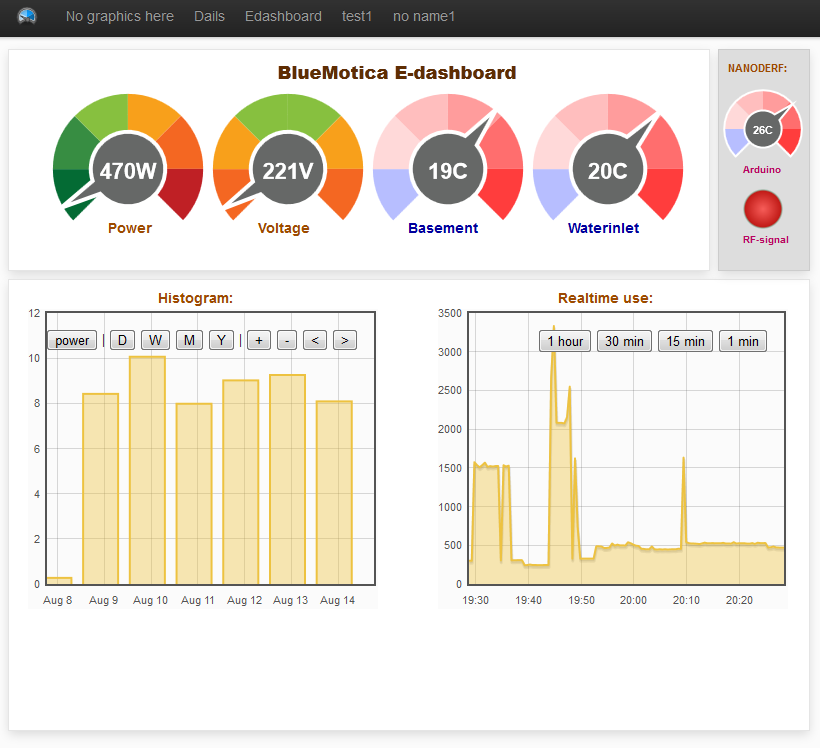

Hi guys,
I have my openenergymonitor running!. But after a whole lot of writing, lurking code, testing and debugging with my own arduino sketch. This because I'm running it on a custom "emontx" (a nanodeRF with sensorshield). I will write another topic and blogpost on my website about that next week.
But now I'm posting my readings every 30 sec to Cosm (Feed link) and my own linux webserver with EmonCMS3 on it. So I started to make some dashboards. By the way, I love the CK-editor in the latest release !
My question: Is there some documentation other than this article :http://openenergymonitor.org/emon/emoncms/using-emoncms about the options with visualisations and widgets? I mean what can I use in the div class options like this example of the wheel dial:
<div class="dial" feed="voltage" id="5" max="230" scale="1" style="width: 150px; height: 150px;" type="6" units="V"></div>
I like to know what the parameter options are with the visiualisations like the histogram, zoom, dailwheels etc. I can’t find it anywhere ?
And second,
Are there some other emoncms users that like to share there sourcecode from the created dasboards? So other people can get creat Idea's from it?
My dashboards are public available at: http://energy.bluemotica.nl/alco
and my first dashboards with wheels (a Beehive, glyn look-a-like) sourcecode is (pastbin dump>):
are there more users of emoncms here that are willing to share there dasboards at this topic?
Re: Emoncms3 - example dashboards and visualisation/widgets options.
mm I discovered that some graphs need FEED="voltage" and others need a FEEDID=1. small point..but if you don't fill it in right it's not showing any graphic.
I realy need a guide for with emoncms visualisation element needs which DIV class element to work. so please help me with this.
Re: Emoncms3 - example dashboards and visualisation/widgets options.
Hi alco,
it is a great idea to share dashboard !
here it is my new dashboard...
http://bit.ly/MLVZWG
Regards,
Gennaro
Re: Emoncms3 - example dashboards and visualisation/widgets options.
Hi Gennaro,
Thanks for posting on my call for examples. I did some digging into emonCMS yesterday (night) and made a new dashboard with a lot of trying. I deside to leave the CKeditor from within emoncms because it gives me a lot of trouble. no images showing, (even after a searche for a way to get the installation of simogeo filemanager right) and un expectable way of disapearing from the dashboard source (php) code within CKeditor. I also have some vieuwing problems with emoncms.. some dails aren't showing at IE8 and IE9..very strange..
So I made my own PHP dashboard code with (opensource) BlueFish 2.2.3 PHP editor and past it right away into CKeditor.
My new dashboard looks like this:

And shows 4 dial feeds (total power of my house with a CT-sensor, Voltage, temperature basement, temperature water inlet), system temperature, RF-signal feed and two charts of the power use.
I also tried to manipulate the voltage dail. because I want to set the minimum value and max value of that dial. But you can’t because there isn’t a variable for it when I look into the dail.js (emoncms\vieuws\dashboard\widgets\ ) (tip: you can create a personal dial colour selection at this file dial.js). I also played a bit with the offset parameter but I didn’t found a good way to show a decent voltage dial.
My new source code of this dashboard can be found at pastbin : http://pastebin.com/Lb9q9MtX
Feel free to give comments and recommendations for it :)
Re: Emoncms3 - example dashboards and visualisation/widgets options.
Hello Alco, nice looking dashboard!. have you tried buildling a dashboard with the new draw editor? This is a more complete editor now than ckeditor and has been one of the big developments in the latest version.
Good idea to share code, It would be good to reimplement a view/edit source option that is also independent of ckeditor.
All the best, Trystan